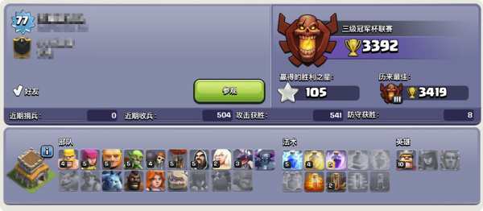
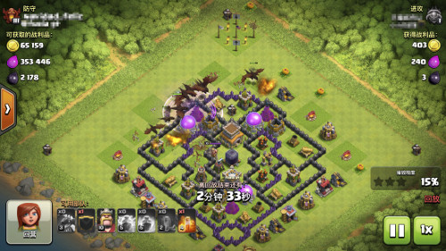
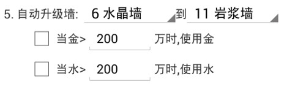

| 日期 | 2016/11/29 |
| 安装包 | 天墉城COC辅助2016-11-29_223536.apk |
| 更新摘要 | 八本龙流冲杯 |
八本龙流冲杯
八本专用冲杯模式，两天可从任意杯段冲到大师杯，四天可上冠军杯。完成“联赛明星”成就，一共获得3500宝石，再也不用苦逼攒宝石，直接买五农。除了宝石，冲杯过程还会获得大量的黑，一天爆黑库轻轻松松。

这个中期八本上周四晚上从金杯三开始冲杯，周六早上已上大师杯，本周一晚上冲到冠军杯，大约一共用了四天整(中间停过几次)。目前还在继续，已到3400杯，似乎还有往上的空间。
**最低科技要求**
3级龙，7人口法术，5级闪电，1级地震
**进攻策略**
只进攻八本以下，一个地震两个闪电解决一个防空。

先下几条龙清边。
再在中间下剩下所有的龙。
之后狂暴跟上，下蛮王打漏掉的建筑。

龙流打满八三星并不容易，所以稳扎稳打保二星争三星。并不使用援兵，因为考虑到要求别人不间断供应气球不太现实，而其他援兵作用并不大。


**说明**
Q: 冲杯有啥好处？
A: 第一次上水晶杯，就会完成“联赛明星”成就的第一颗星，奖励500宝石；上大师杯会完成第二颗星，奖励1000宝石；冠军杯完成第三颗星，奖励2000宝石。还没满五农的八本们，你们不心动吗？

Q: 龙流挂机靠谱吗？
A: 靠谱，龙流是相对简单的一种打法，基本上只要确定防空位置就可以了，对援兵的处理也比较简单，非常适合自动进攻。
Q: 龙流会不会很费水?
A: 龙流确实是相当费水，一次进攻得用掉30w+的水。但是，天墉城助手在进攻时会优先选择水比较多的目标，长期来看，水不会减少反而会缓慢增加。基本上一天下来，水会有1百万左右的增涨。但是刚开始冲杯时，请保证至少100w的水，以免开始就把水用光了。
Q: 只进攻八本以下吗?
A: 没错，进攻九本风险太大，万一黑三星，至少浪费一个小时，还是打八本稳妥。不用担心搜不到八本，即使是冠军杯也有不少的八本。只是上了大师杯后搜八本的时间会比较久，一两个小时也正常。
Q: 其他本可以用吗?
A: 不能，八本专用。原因是：九本高杯段很难搜到八本，而九本用龙流打同本并不理想；七本以下在大师杯搜到同本太难了，越本打也并不理想。（其实我都没试过。。。）不过以后有可能会出其他本的冲杯模式。
Q: 开始冲杯需要清兵吗?
A: 非常需要，助手并不会自动清兵，请清除所有除龙以外的兵，包括正在造的兵。另外，法术也请一并清除，除非刚好是两闪一震一狂暴。
Q: 如何设置龙流冲杯?
A: 助手设置页面第一屏进攻模式直接选“八本龙流冲杯”，另外建议勾选“蛮王进攻”。刷墙可选可不选，但至少保留50w金搜对手。闪黑是强制关闭的。
| 日期 | 2016/11/21 |
| 安装包 | 天墉城COC辅助2016-11-21_092509.apk |
| 更新摘要 | 自动刷墙 |
自动刷墙
支持自动刷墙喽。只要指定墙的起始等级和目标等级，就会自动把这两个等级间的墙都刷到目标等级。比如刷墙设置为“6级到8级”，则会把6级和7级墙都刷成8级。

可以单选用金或者水刷，或者都选。如果选择了金，当金币数量大于设定的值时就可以刷墙；水也是一样的。几点说明：
1. 刷墙是有时间间隔的，比如每十分钟检查一次，所以并不是资源一满足就立刻刷墙。
2. 优先刷等级低的墙。
3. 有些墙可能识别不到(有时即使人眼也不一定能看到)，有可能最后会有剩一些墙始终没有刷。
4. 刷墙后至少要有30W金水剩余(得留点钱搜鱼造兵啊)，如果不满足，即使金水超过设定的数量也不回刷墙。
| 日期 | 2016/10/30 |
| 安装包 | 天墉城COC辅助2016-10-30_205827.apk |
| 更新摘要 | 自动造兵，自动采集，自动打资源，全力打黑，闪黑，自动请求援兵，DIY进攻，多波进攻，双王进攻，另一设备登陆自动等待，等等 |
原创辅助，打黑超快
四月份升十本开始用某窝辅助，可惜没两个月某窝开始强制收费，然后就只能用某免费辅助。可惜免费的打黑太慢，24小时挂机单王都不能连升。于是萌生念头自己搞个辅助，主要目的就是求打黑快。前前后后闲暇时间搞了两个多月，第一个版本已经可用，九本宝宝打黑模式平均一天7到8万黑，十本中期均衡模式平均一天1100w金水+5w黑。
辅助使用按键精灵开发，完全不收费。开始的广告是按键精灵自动加的，无法去除。

辅助基本一键配置，提供三个预定义模式："弓蛮省水"，"弓蛮巨均衡" 和 "全力打黑模式"，以及一个自定义模式。一般选择均衡模式即可，如果有兴趣的可以试试自定义模式，diy你的进攻配置和策略。自定模式提供两种策略：一种是传统的四周无脑下兵，”四面围攻“；另一种是智能判断建筑物下兵，”重点突破“，比如打黑就只需在黑水矿周围下兵。”重点突破“还可以自定义下兵策略，比如先用弓箭手贴边下偷一波，如果没有成功，再下胖子野蛮人抗伤害，弓箭强拆。全力打黑模式就是用的这个策略，效果还不错。
支持闪黑任何模式下均可使用，以最大限度抢黑。
支持各种模拟器目前该辅助仅支持720*1280分辨率 320dpi，开发主要在模拟器在进行，测试部落也只是九本和十本，问题总是难免的，有任何问题/意见/建议请到群里反馈595556448，谢谢。